約好
三分鐘，開好你的預約頁
從開店到客人約進來：完整使用流程
開店
註冊、填店名，預約頁就有了
一 開店
註冊只要
Email 和密碼
不用綁信用卡，也不用等審核。
填店名、選行業、
取一個網址
這個網址就是之後給客人的預約連結。
預約頁
立刻開好
系統已經依你的行業，先列好常見的服務和營業時間，改一改就能用。
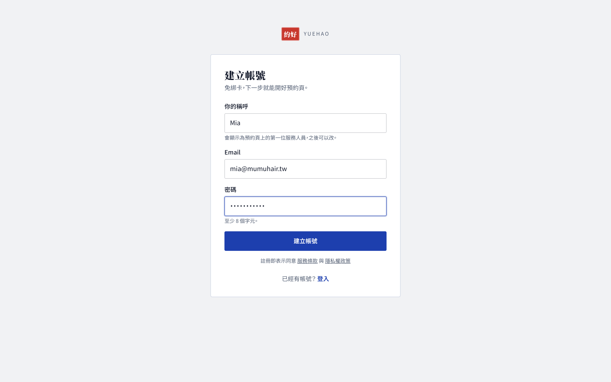
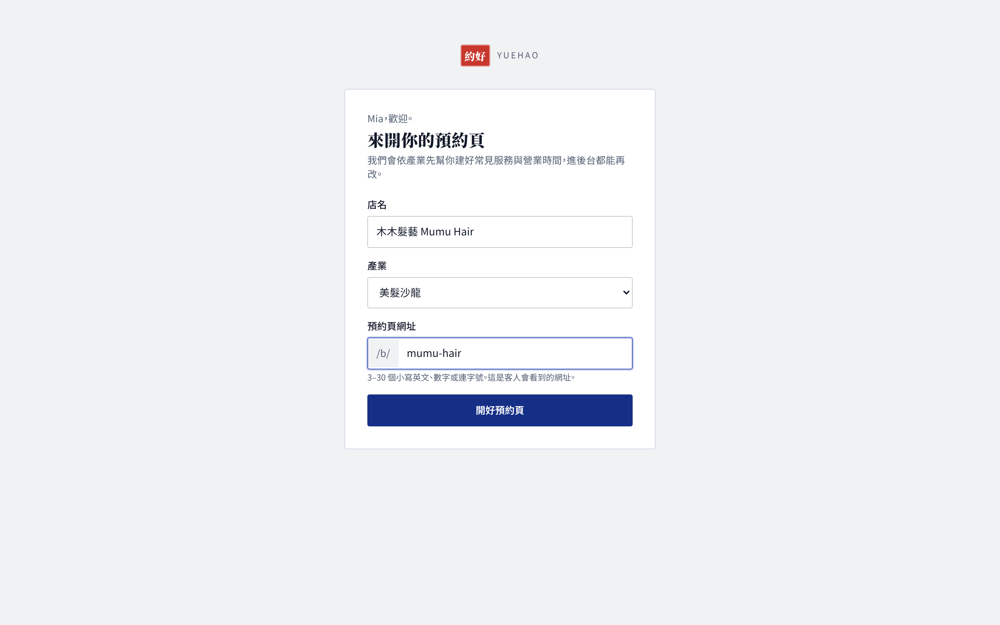
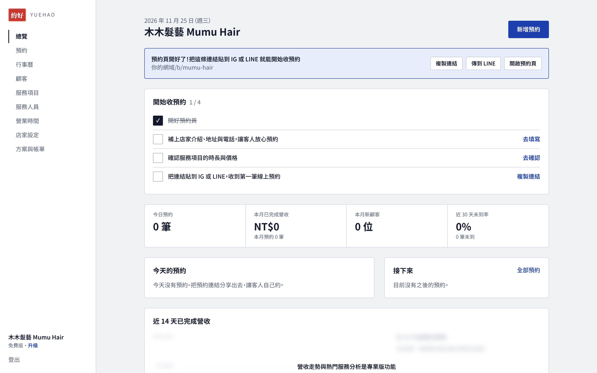
設定
價目、人員、營業時間
二 設定
每項服務：
多久、多少錢
時長決定一筆預約占多久，系統據此算出空檔。客人預約前就看得到價格。
每位人員：
做什麼、休哪天
各自有獨立的行程。客人可以指定設計師，同一個時段只會被訂走一次。
營業時間
與預約規則
每週時段、臨時公休，還有最晚要提前多久預約。
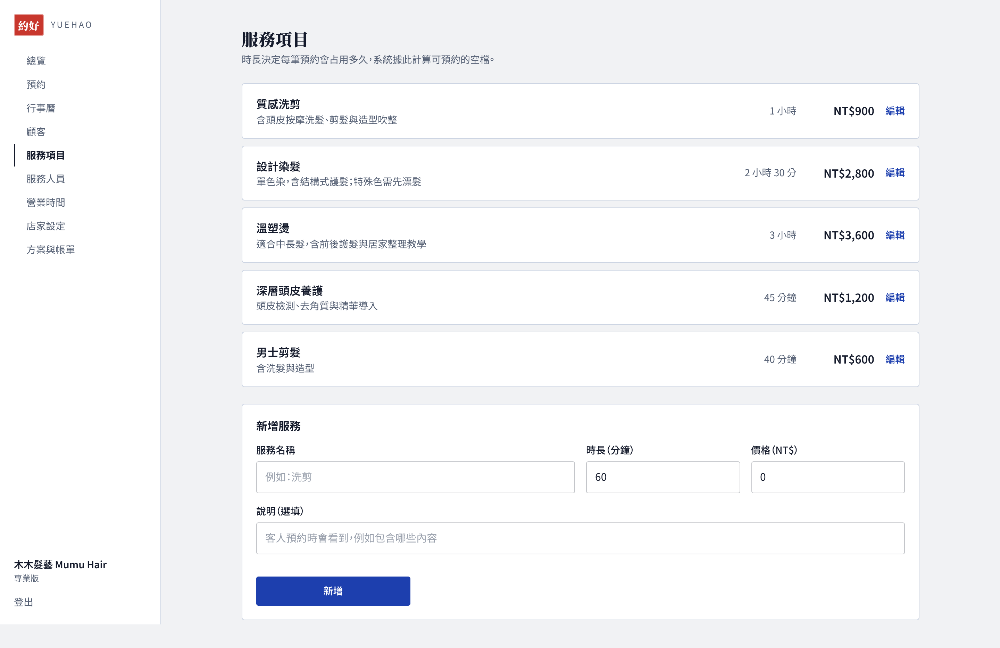
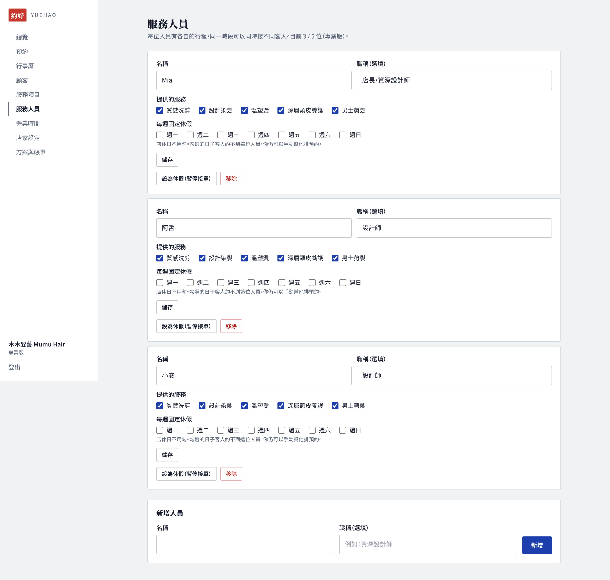
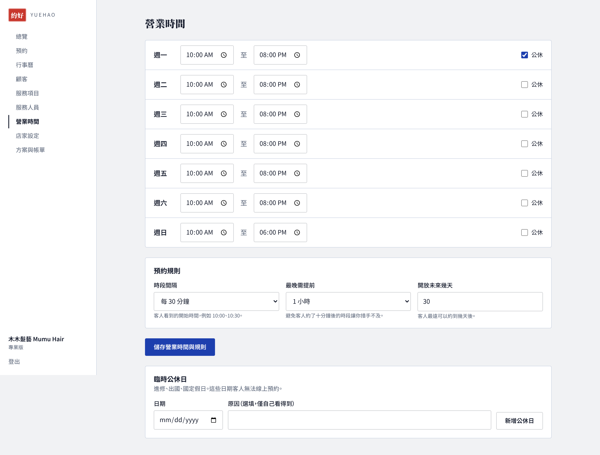
分享
一條連結，一個 QR Code
三 分享
把連結
貼出去
IG 個人檔案、LINE 官方帳號、Google 商家。QR Code 可以印成立牌放櫃檯。
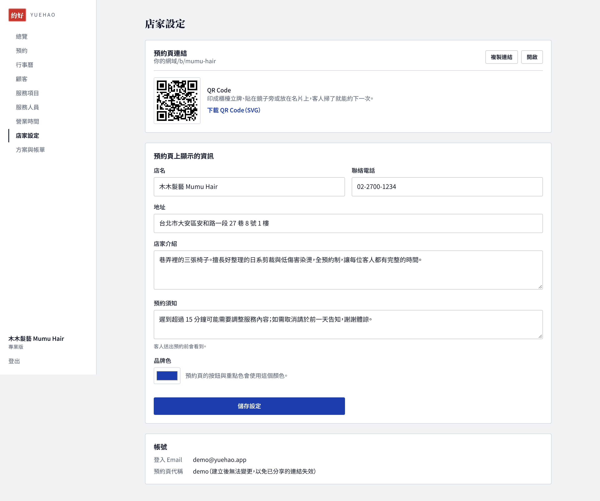
客人預約
在手機上，選三下
四 客人預約
客人打開連結
不用下載 App，不用註冊會員。先看到你的價目表。
選設計師、選時間
只會列出還空著的時段，已經被訂走的不會出現。
留姓名和手機
同一支手機會自動認成同一位客人。
約好了
客人可以加入行事曆；臨時不能來，也能自己取消，把時段還給你。
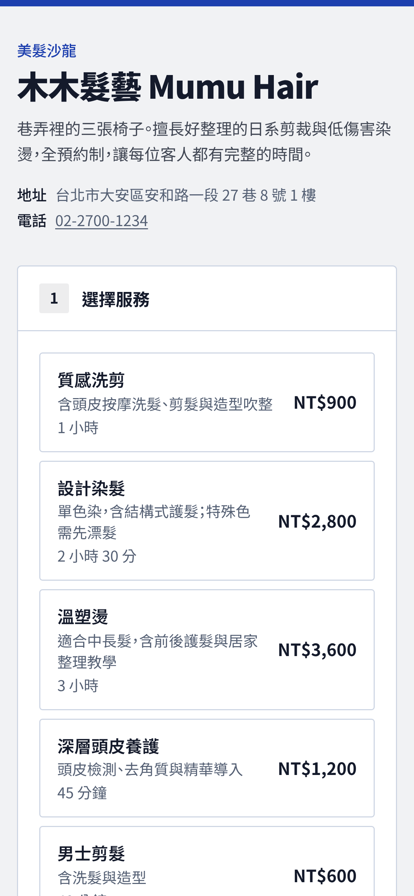


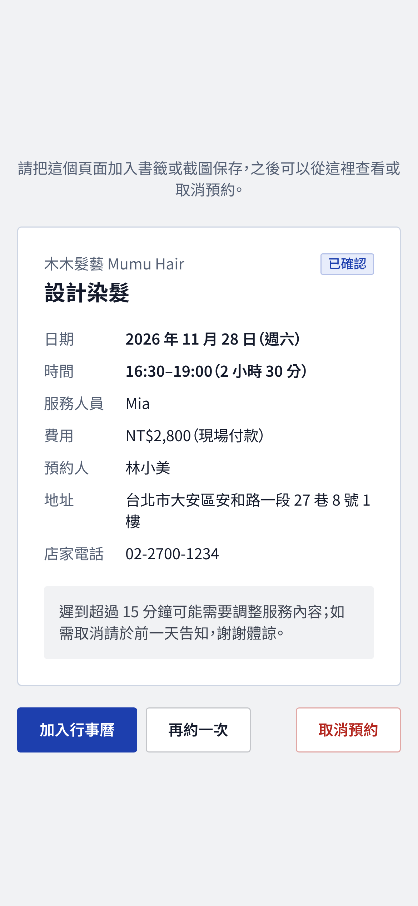
約好了
每天使用
打開就是今天的預約本
五 每天使用
今天有誰來
今日預約、本月營收、新顧客、未到率，還有哪一項服務最賺。
做完按完成，
沒來按未到
可以改期。電話或現場來的預約手動記進去，空檔會同步更新。
一週的行程
每位設計師的預約排在一起看，哪天滿、哪天空一目了然。
顧客名單
自己累積
來過幾次、花了多少、上次什麼時候來。偏好和禁忌寫在備註。
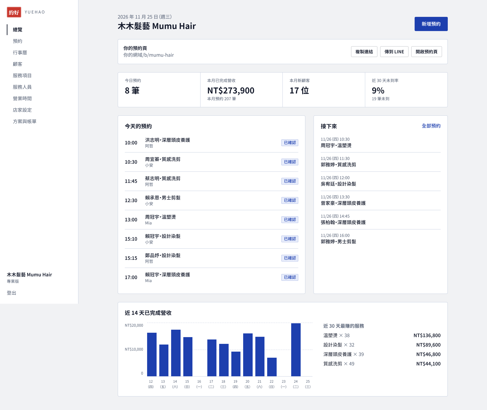
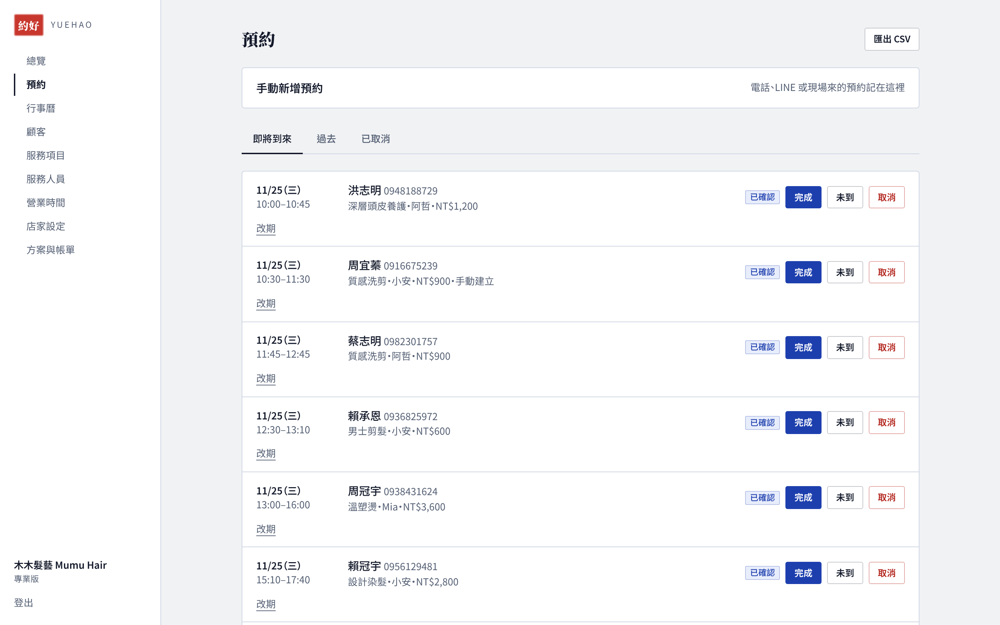
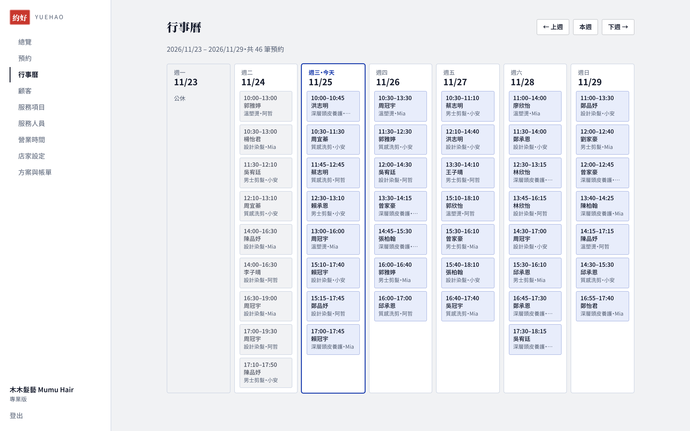
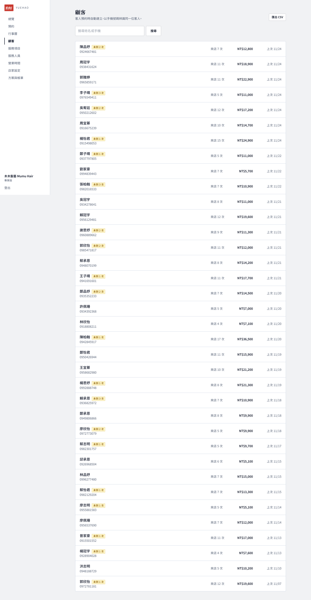
升級
先免費用，生意變好再說
六 升級
一個人的店，
免費用
請了第二個人，或每月線上預約超過 30 筆，再升級。可以月繳或年繳，隨時取消。
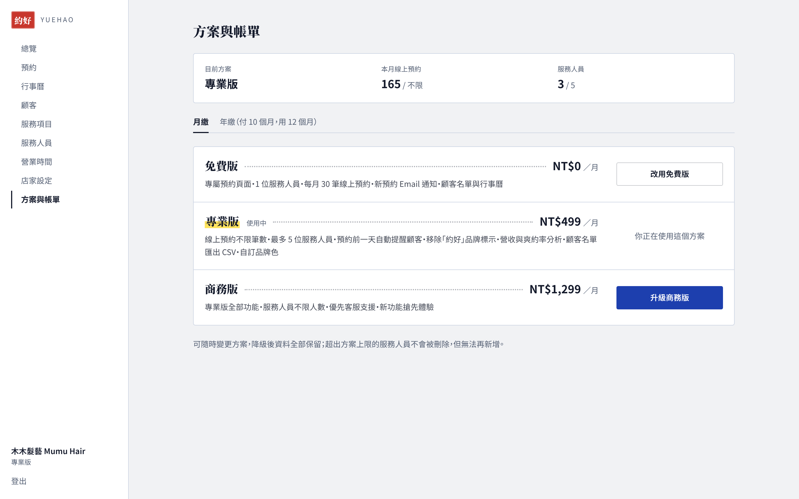
約好
下一位客人，
讓他自己約好。
免費開一個預約頁
一開店
二設定
三分享
四客人預約
五每天使用
六升級